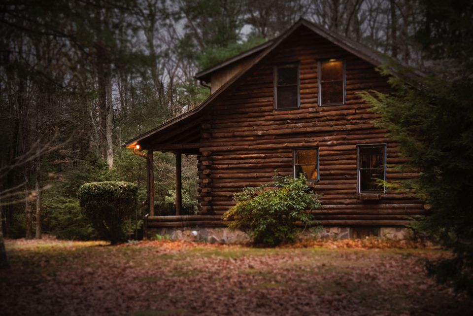

Sevier & Blount Counties
Cabin and deck staining in Seymour and the foothills
On the way to the mountains: log homes, cabins and a lot of rental properties with decks that get heavy use.

Log homes and cabins
Logs check, move and soak up stain. We clean them, deal with the old finish, and brush stain into the checks and end grain where water gets in.
Rental cabin owners
If you rent your cabin, a tired deck shows up in guest photos. Tell us your open dates and we'll schedule the work between bookings, weather permitting.
Hot tubs and grills
Cabin decks often have hot tubs and grills sitting on them. We work around them, and we'll point out any boards that are getting soft under the tub.
Best time to book in Seymour
Same as the rest of the area: September and October are the sweet spot. The driest months here on average are October (2.81 in.) and September (3.49 in.)NOAA. Fall dates fill first, so get your photos in early. Why fall works best.
Local question
Asked in Seymour
Can you work between cabin rentals?
Yes. Give us the open dates. Most cabin decks are two days; log walls take longer and we'll plan for that.
Ready when you are